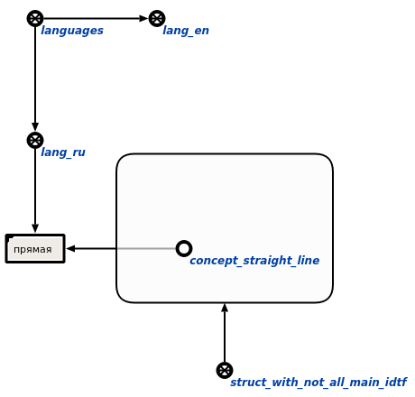

Команда пользовательского интерфейса для проверки наличия всех основных идентификаторов сущности на всех внешних языках предназначена для проверки сущностей, на предмет наличия у них основных идентификаторов на всех внешних языках. Единственным аргументом запроса является знак структуры, элементы которой будут проверятся. Результатом выполнения команды является занесение всех узлов, у которых нету основных идентификаторов на всех внешних языках, во множество элементов, у которых нету идентификаторов на всех внешних языках:
